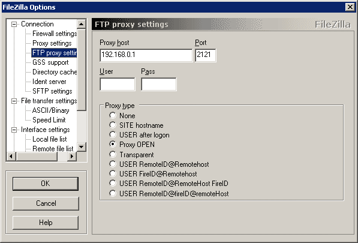

FTP Proxy settings
Overview
FileZilla supports connections to FTP servers over FTP proxies. There are a lot of different proxy types, but FileZilla should be able to connect through most ftp proxies

| Firewall hostname | - | The address of the firewall |
| Port | - | The port of the firewall |
| User | - | The username used to logon to the firewall |
| Pass | - | The password used to logon to the firewall |
| Firewall type | - | Specifies the firewall type. Try using USER FireID@Remothost first. If you have problems connecting to the server, try the other firewall types |
Contact your system administrator if you don't know the required information or if you have problems connecting through the ftp proxy.